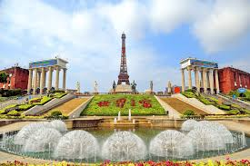
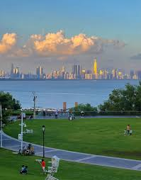
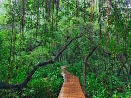
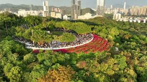
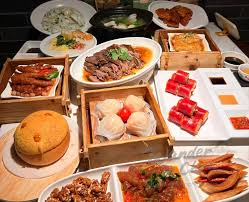
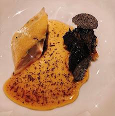

Shenzhen é uma das cidades mais inovadoras da China e referência mundial em tecnologia verde. A cidade possui a maior frota de ônibus elétricos do mundo e investe fortemente em transporte sustentável.

Window of the World, parque cultural com monumentos famosos.

Shenzhen Bay Park com vista da baía e áreas verdes.

Mangrove Nature Reserve com preservação ambiental.

Lianhua Mountain Park com trilhas e natureza.

Culinária cantonesa tradicional.

Restaurantes com alimentos orgânicos.